Gradient field of horizontal migration
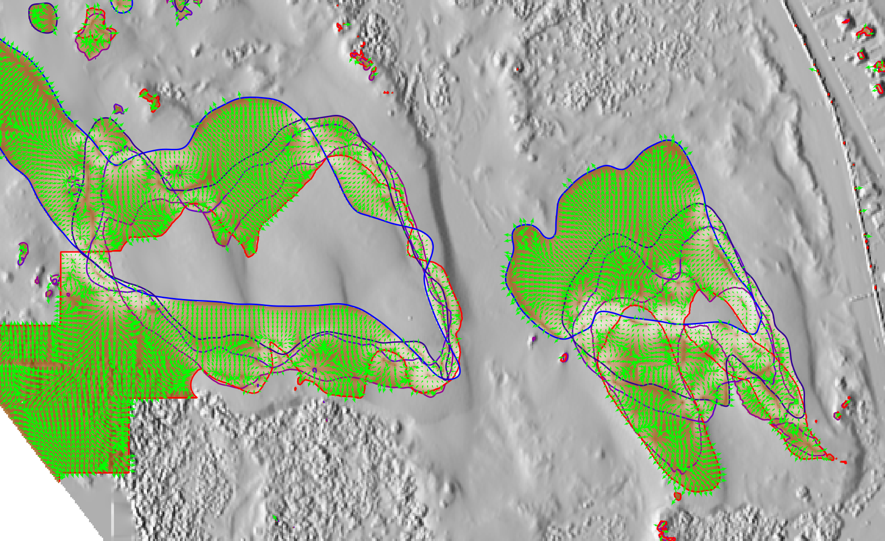
Digital elevation model for tests
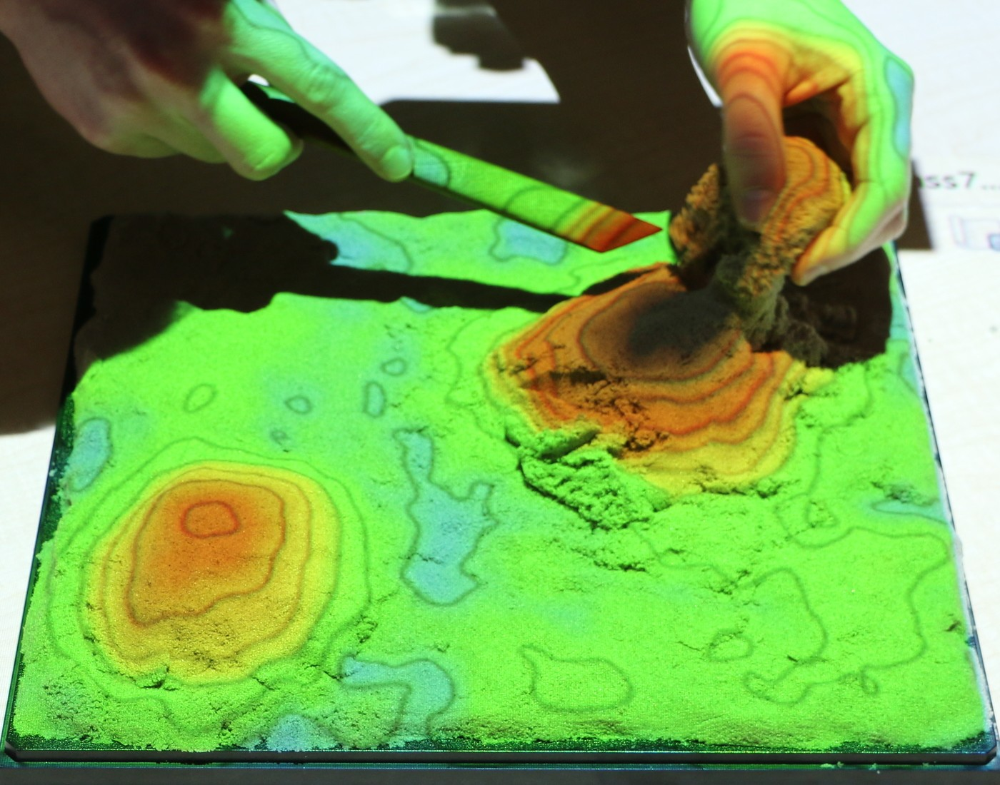
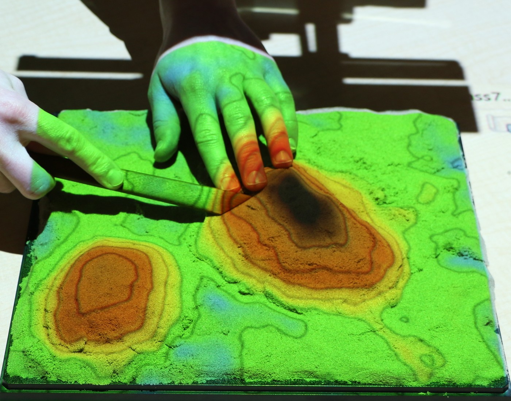
Using Tangible Landscape
Contours, year 2001, contour 110m
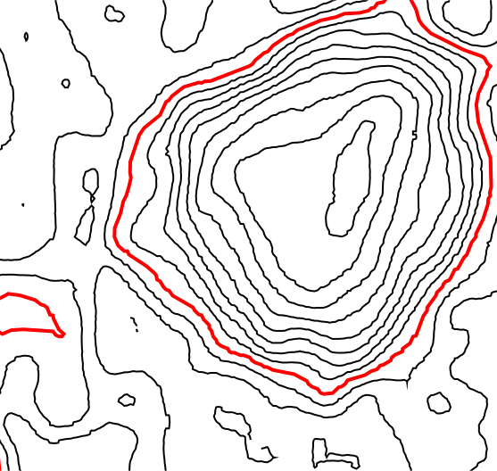
Contours, year 2005, contour 110m
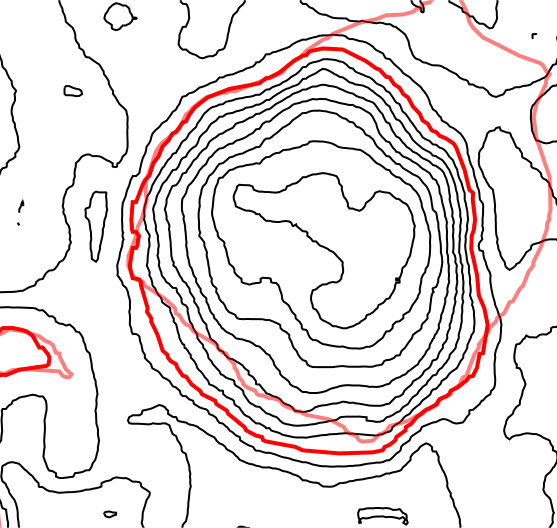
Contours, year 2008, contour 110m
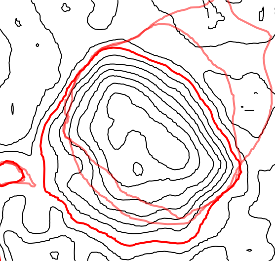
Contours, year 2009, contour 110m
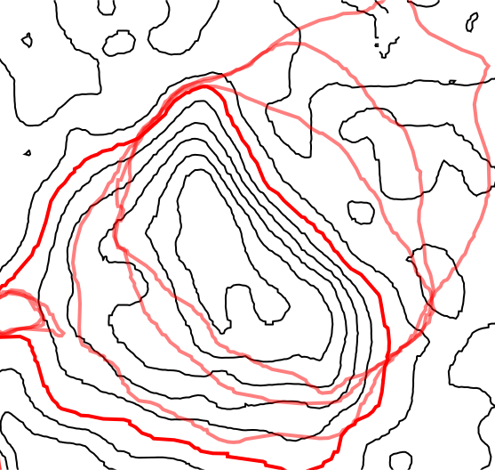
Only 110m contours, ignoring rest

Assign years as heights
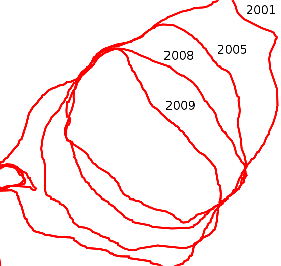
Create surface from contours
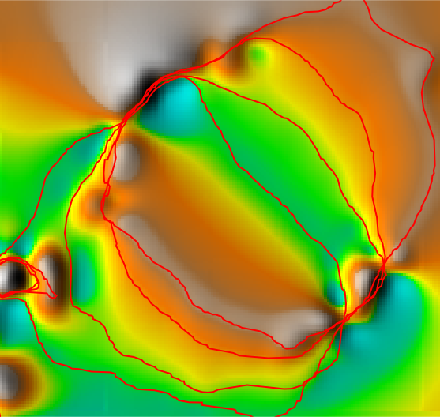
Looks like terrain but height is time
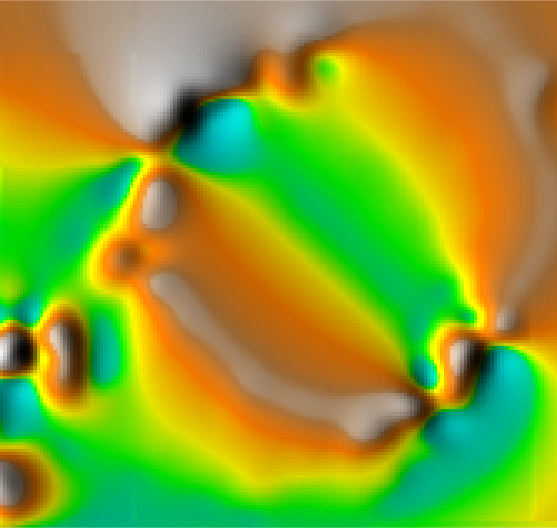
Gradient field (vector field) lines
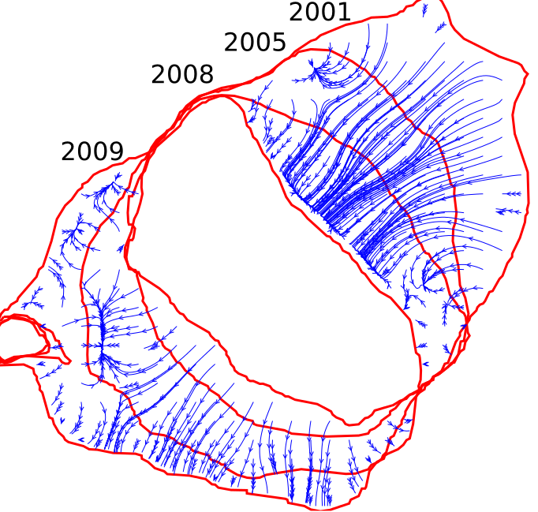
Gradient field (vector field)
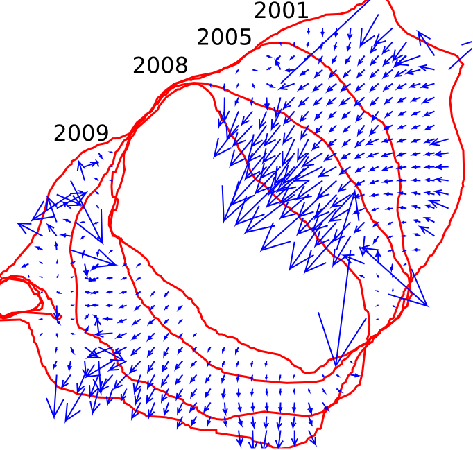
Comet-like visualization
Inspired by Tokyo Wind Speed application by Cameron Beccario.
Derived from air.js source code.
Uses HTML, CSS, JavaScript and D3.js library.
Gradient field and rate of change